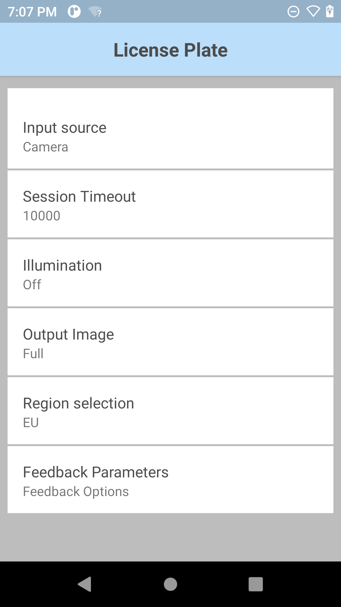
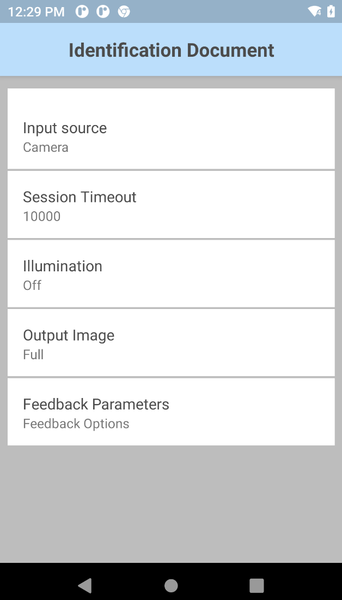

Overview
Workflow Input provides options to capture data when executing tasks from a workflow process. This includes capturing text from digital images, or decoding the barcode from a captured image with the built-in imager.
Workflow Input consists of:
- NG SimulScan Plus - integrates AI capabilities to scan multiple barcodes from forms or labels.
- Free-Form OCR - recognizes text within a captured image and extracts the text in digital form. During image capture, the frame can be resized to ensure the target lies within the frame.
- Picklist + OCR - allows for capturing barcodes and digitizing printed text from images, enabling seamless processing within a single workflow with optional customizable OCR rules for constraints and confidence levels.
- OCR Wedge - allows for the automatic recognition and capture of text in specific use cases and its conversion into digital data for delivery to any application. The specific use cases are: license plates, vehicle identification numbers (VIN), tire identification numbers (TIN), shipping container IDs, utility meters and identification documents, where OCR can extract specific information from drivers licenses and identification cards.
- Image Capture - capture images with the aid of colored highlights to ensure the appropriate image is captured. There are two types of image capture: Free-Form Image Capture or Document Capture.
Use SetConfig to programmatically configure Workflow Input parameters in the DataWedge profile.
For developers, to capture data and images from Workflow Input (Free-From OCR, Picklist + OCR, OCR Wedge, or Image Capture) see Workflow Input Programmer's Guide.
Note:
- While using Workflow Input for data capture, certain built-in Android applications may not allow the camera or imager's viewfinder to open due to restrictions imposed by Android.
- License required message appears after device reboot or factory reset. If any Workflow Input options are toggled or accessed via the DataWedge UI after a device reboot or factory reset, a "License required" message may appear. This occurs if the Mobility DNA OCR Wedge license initialization process has not completed after the reboot or reset. This is resolved after some time elapses for the license initialization process to complete.
- When retrieving scan data via Keystroke Output, Zebra recommends to add a delay using the "Send Pause" action in Advanced Data Formatting. This prevents potential data loss prior to data delivery.
Requirements
- DataWedge version 11.2 or higher (find the version)
- Scanning framework 32.0.3.6 or higher (find the version)
- Zebra mobile computer on SD660 platform, see Zebra Platform Devices
- Android 11 or higher
- For Zebra Professional-series devices:
- Free-Form OCR, Picklist+OCR, and NextGen SimulScan Plus require a Mobility DNA Enterprise license.
- For OCR Wedge offerings:
- Built-in camera on mobile computer
- Mobility DNA OCR Wedge license - required for each individual OCR offering:
- Mobility DNA License Plate OCR Wedge License
- Mobility DNA Identification Documents OCR Wedge License
- Mobility DNA Vehicle Identification Number OCR Wedge License
- Mobility DNA Tire Identification Number OCR Wedge License
- Mobility DNA Shipping Container ID OCR Wedge License
- Mobility DNA Meter Reading OCR Wedge License
Also see DataWedge licensing.
Note: When using DWDemo for testing or demonstration of OCR Wedge, a license is not required.
NG SimulScan Plus
NG SimulScan Plus enhances the existing NG SimulScan MultiBarcode feature by integrating AI capabilities when scanning multiplbe barcodes from forms or labels. Its primary new feature is barcode highlighting, which provides real-time feedback during the scanning process to improve both accuracy and user confidence. This functionality is supported on devices using either the integrated imager or the camera.
Basic MultiBarcode
MultiBarcode acquires multiple, unique barcodes from a form or label in a single scan session. Data is delivered once a specific quantity-based requirement is met. Duplicate barcodes are ignored. This supports two primary use cases:
- Fixed Barcode Quantity - Used when forms or labels always contain the same number of barcodes and there is no other unique criteria to distinguish between them.
- Variable Barcode Quantity - Used when the number of barcodes can vary when scanning a form or label. A target range for the quantity of barcode to capture can be defined, along with a specific timeout for the scan session.
User Interface and Device Support:
- Barcode Highlighting - Decoded barcodes are highlighted in green within the viewfinder. This is configurable for the imager and always enabled for the camera.
- Camera Viewfinder - When using the camera, the viewfinder provides on-screen controls to enable or disable the flash and to configure zoom levels within the session.
Configuration
Basic MultiBarcode parameters:
- Input Source - Specify the input source to capture data: Imager or Camera.
- Beam Timer/Session Timeout - Specify the timeout period for a scan session in milliseconds. Integer range: 0 – 60000 (increments of 500), default: 15000.
- Illumination - Turn illumination on or off during the scanning session.
- Zoom – (Camera only) Specify the camera zoom value. Range: 1 to 8, default: 1.
- MultiBarcode Quantity Mode Select the barcode quantity to complete a scan session:
- Fixed Quantity - For scanning a consistent, exact number of barcodes per session. The session only completes when the target quantity is met. If too few barcodes are present, the session times out with no data. If more barcodes than the target are in view, the scanner decodes the first unique ones it finds until the count is met (the return order is random).
- Fixed # of Barcodes - Specifies the exact quantity of barcodes to scan. Maximum: 100.
- Variable Quantity - For scanning a variable number of barcodes within a specified range. Data is returned only if the final count of unique barcodes is within the min/max range. If the count is below the minimum, no data is returned. Edge Case: If the Max # is set lower than Min #, it behaves like Fixed Quantity Mode, using the Max # as the target.
- Min # of barcodes - The minimum number of unique barcodes required to complete a scan. Minimum value: 1.
- Max # of barcodes - The maximum number of unique barcodes required to complete a scan. Maximum value: 100.
- Fixed Quantity - For scanning a consistent, exact number of barcodes per session. The session only completes when the target quantity is met. If too few barcodes are present, the session times out with no data. If more barcodes than the target are in view, the scanner decodes the first unique ones it finds until the count is met (the return order is random).
- Viewfinder – Specify whether preview is enabled or disabled. This parameter is shown only when input source is set to Imager. For Camera, preview is always shown.
- Feedback Parameters:
- Decode Audio Feedback - Select an audio tone from to play for a successful decode
- Decode Haptic Feedback - Enable/disable the device to vibrate for a successful decode.
Note: For Android 13 devices, Touch Feedback must be enabled in Vibration & haptics under device Settings in order for Decode Haptic Feedback to function. - Decode LED Notification - When enabled, the Green LED flashes to indicate a successful decode
- Beep Volume Channel - Select the volume setting to be used when playing the Decode Audio Feedback:
- Ringer - Uses the Ringer volume setting for audio feedback
- Music and Media - Uses the Music and Media volume setting for audio feedback
- Alarms - Uses the Alarms volume setting for audio feedback
- Notification - Uses the Notification volume setting for audio feedback (default)
To configure Basic MultiBarcode:
- In the DataWedge profile, enable Workflow Input and Basic MultiBarcode under NG SimulScan Plus.

- Tap the menu icon next to Basic MultiBarcode to configure the parameters.

- Select and configure the MultiBarcode Quantity Parameters.

- Tap on MultiBarcode Quantity Mode and select either Fixed Quantity or Variable Quantity.

- Configure the parameter(s) based on the selected mode:
- For Fixed Quantity, set the fixed number of barcodes:

- For Variable Quantity, set the minimum and maximum number or barcodes:

- For Fixed Quantity, set the fixed number of barcodes:
- Tap back to return to the Basic MultiBarcode screen and configure any other desired options.
Free-Form OCR
Process documents or labels quicker and capture data with higher accuracy with Free-Form OCR. Free-Form OCR, powered by Google ML Kit using Text Recognition v2 (Beta), automatically captures data by recognizing text within a captured image and extracting the text in digital form. During camera capture, the frame for the Region of Interest (ROI) is visible in the preview screen, allowing the user to adjust the frame to enclose the target text prior to data capture. A Mobility DNA Enterprise license is required for Zebra Professional-series devices.
Free-Form OCR segments capture text into 3 components:
- Block - a contiguous set of text lines, such as a paragraph or column
- Line - a contiguous set of words on the same axis or line, such as a line of text
- Element - a contiguous set of alphanumeric characters ("word") on the same axis in most Latin languages or a character in others.
The image resolution is 1920 x 1080 for images captured from the camera.
See "Extract string data from the intent" in the Workflow Input Programmer's Guide.
Video demonstration of data capture using Free-Form OCR
Configuration
Free-Form OCR parameters:
- Input Source - Specify the input source to capture data: Imager or Camera.
- Session Timeout - Specify the timeout period. Integer range: 0 – 60000 (increments of 500), default: 15000.
- Script - Specify the script language of the text being read, with support for Chinese, Japanese, Korean, Devanagari, and multiple Latin languages, see Supported Languages:
- Latin (default)
- Latin and Chinese
- Latin and Japanese
- Latin and Korean
- Latin and Devanagari
- Illumination - Turn on/off illumination during the scanning session.
- Output Image – Specify the output image mode:
- Disable - Do not output image
- Full - Output entire image
- Cropped (default) - Cropped to the ROI (region of interest), which is adjusted and set by the user in the preview screen when capturing data
- Zoom – Specify the camera zoom value: 1 to 8. Default value is 1.
- Feedback Parameters –
- Decode Audio Feedback - Select an audio tone from the list to play for a successful decode
- Decode Haptic Feedback - Enable/disable the device to vibrate for a successful decode. For Android 13 devices, Touch Feedback must be enabled in Vibration & haptics under device Settings in order for Decode Haptic Feedback to function.
- Decode LED Notification - When enabled, the Green LED flashes to indicate a successful decode
- Beep Volume Channel - Select the volume setting to be used when playing the Decode Audio Feedback:
- Ringer - Uses Ringer volume setting for audio feedback
- Music and Media - Uses Music and Media volume setting for audio feedback
- Alarms - Uses the Alarms volume setting for audio feedback
- Notification - Uses Notification volume setting for audio feedback (default)
To configure Free-Form OCR parameters:
- In the DataWedge profile, enable Workflow Input and Free-Form OCR under OCR.

- Tap the menu icon next to Free-Form OCR to open its parameters.

- Select and configure the Free-Form OCR parameters as desired.
- Tap on Feedback Parameters.

- Set the desired Feedback Parameters.
- Optionally, use DWDemo to try this feature.
Picklist + OCR
Picklist + OCR enables the capture of barcodes and digitization of printed text from images, allowing seamless processing within a single workflow and eliminating the need to switch between functionalities. Data is captured using either the camera or imager. Picklist + OCR supports recognition of a word or line of text, with optional customizable OCR rules for constraints and confidence levels.
If using Keystroke Output to output data scanned from Picklist+OCR, Zebra recommends to send a pause (approximately 200 ms) using Advanced Data Formatting rules before sending the scanned data.
Video demonstration of data capture using Picklist+OCR
Configuration
Picklist + OCR parameters:
- Input Source - Specify the input source to capture data: Imager or Camera. Default: Imager
- Session Timeout - Specify the timeout period. Integer range: 0 – 60000 (increments of 500), default: 15000.
- Illumination - Turn on/off illumination during the scanning session. Default values are “on” for Imager and “off” for Camera.
- Script- Specify the script:
- Latin (default)
- Latin and Chinese
- Latin and Japanese
- Latin and Korean
- Latin and Devanagari
- Report OCR Data Rules - Specify the conditions and actions to decode the selected text. Available options:
- Conditions - Define the conditions in which the rule should be applied:
- Identifier:
- Min Length - Specify the minimum length of the text to be returned.
- Max Length - Specify the maximum length of the text to be returned.
- Starts With - The text must begin with the specified characters.
- Contains – The text must contain the specified characters.
- Ignore Case Sensitivity - If enabled, the captured text is not case-sensitive and does not need to match the letter case of the word in the Contains field. If disabled, the captured text is case-sensitive, and the letter case must match the characters in the Contains field.
- Identifier:
- Actions - Define the action to take when the condition is met:
- Report – Return the captured text based on the Conditions specified.
- Conditions - Define the conditions in which the rule should be applied:
- Report Barcode Data Rules - Specify the conditions and actions to decode the barcode. Available options:
- Conditions - Define the conditions in which the rule should be applied:
- Identifier:
- Min Length - Specify the minimum length of the barcode to be returned.
- Max Length - Specify the maximum length of the barcode to be returned.
- Starts With - Specify the characters with which the barcode must begin.
- Contains – The barcode must contain the specified characters.
- Ignore Case Sensitivity - If enabled, the captured barcode is not case-sensitive and does not need to match the letter case of the word in the Contains field. If disabled, the captured word is case-sensitive, and the letter case must match the characters in the Contains field.
- Report – Return the captured barcode based on the Conditions specified.
- Identifier:
- Conditions - Define the conditions in which the rule should be applied:
- Picklist Mode - Select the data type to be scanned in picklist mode:
- OCR or Barcode (default)
- OCR Only
- Barcode Only
- Text Structure - Select the data structure of the text.
- Single Word
- Single Line (default)
- Output Image (OCR Only) - Specify the output image mode:
- Disable - No image is output.
- Cropped (default) - The cropped image is returned only when the word is decoded. When the barcode is decoded, there is no image returned.
- OCR Confidence – Specify the minimum confidence required to return the word decoded using OCR. Integer range: 0 - 100, default: 75.
- Viewfinder – Specify whether preview to be enabled / disabled. This parameter is shown only when input source is set to Imager. For Camera, preview is always shown.
- Feedback Parameters:
- Decode Audio Feedback - Select from the list an audio tone to play for a successful decode.
- Decode Haptic Feedback - Enable/disable the device to vibrate for a successful decode.
- Decode LED Notification - When enabled, causes the Green LED to flash to indicate a successful decode.
- Beep Volume Channel - Select the volume setting to be used when playing the Decode Audio Feedback:
- Ringer - Uses Ringer volume setting for audio feedback
- Music and Media - Uses Music and Media volume setting for audio feedback
- Alarms - Uses the Alarms volume setting for audio feedback
- Notification - Uses Notification volume setting for audio feedback (default)
- Decoders – Enable/disable decoders and configure specific decoder parameters.
Enabled decoders by default:
| Symbology | Enabled | Disabled |
|---|---|---|
| Australian Postal | x | |
| AZTEC | x | |
| Canadian Postal | x | |
| Chinese 2 of 5 | x | |
| Codabar | x | |
| Code 11 | x | |
| Code 128 | x | |
| Code 39 | x | |
| Code 93 | x | |
| Composite AB | x | |
| Composite C | x | |
| Discrete 2 of 5 | x | |
| Data Matrix | x | |
| DotCode | x | |
| Dutch Postal | x | |
| EAN 128 | x | |
| EAN 13 | x | |
| EAN 8 | x | |
| Finnish Postal 4S | x | |
| Grid Matrix | x | |
| GS1 Databar | x | |
| GS1 Databar Eexpanded | x | |
| GS1 Databar Limited | x | |
| GS1 Datamatrix | x | |
| GS1 QRCode | x | |
| Han Xin | x | |
| Interleaved 2OF5 | x | |
| ISBT 128 | x | |
| Japanese Postal | x | |
| Korean 3OF5 | x | |
| Mailmark | x | |
| Matrix 2OF5 | x | |
| Maxicode | x | |
| Micro QR | x | |
| MicroPDF | x | |
| MSI | x | |
| PDF 417 | x | |
| QR Code | x | |
| Signature | x | |
| TLC 39 | x | |
| Trioptic 39 | x | |
| UK Postal | x | |
| UPCA | x | |
| UPCE0 | x | |
| UPCE1 | x | |
| US Planet | x | |
| US Postnet | x | |
| US4State | x | |
| US4state FICS | x |
To create a Report OCR Data Rule:
Enable Workflow Input and Picklist + OCR.
Tap on the ellipsis (...) next to Picklist + OCR then tap Report OCR Data Rules.
Tap on the menu icon in the top right and tap New Rule.
Enter a name for the new rule and tap OK to create the new rule.
Tap on the new rule created to open its options.
Tap Conditions to specify the conditions for the rule to take into effect, then tap Identifier.
Configure the appropriate settings as desired:
Tap back until the screen appears displaying the rule.
Tap the rule to open its options, then tap Actions.
Tap on the menu icon in the top right and tap New Action.
Tap Report to decode the barcodes based on the Conditions specified.
The Report action is listed.
To configure the other Picklist + OCR parameters:
- In the DataWedge profile, enable Workflow Input and Picklist + OCR under OCR.
- Tap the ellipsis (...) next to Picklist + OCR to open its parameters. Configure the parameters as desired.
- Tap on Feedback Parameters. Configure the parameters as desired.
OCR Wedge
OCR Wedge uses machine learning to enable fine-tuned, use-case specific models to extract data in real-time via the Zebra Android device camera without the need for a data connection. Supported configurations:
| License Plates (See supported countries/states.) | ||
| Identification Documents (See supported document types by state, country, province.) | ||
| Vehicle Identification Number (VIN) | ||
| Tire Identification Number (TIN) | ||
| Shipping Container ID | ||
| Meter Reading |
Main features:
- Automatic text data capture using trained machine learning models
- Visual feedback provided to guide users during data capture
- On-device processing of data being captured
More information on each configuration follows in the sections below. To learn more, see OCR Wedge.
License Plate
License Plate OCR Wedge offers automatic recognition of license plates with the following characteristics:
- Region/Country of origin: US, EU. See list of states/countries supported.
- Supported character colors: black, green, blue, red
- License plates with 1 or 2 lines of characters
- License plates with a width-height ratio of at least 1:1
- Dark text on brighter background
 |
 |
|
| Sample license plate from US (New York) and UK |
Video demonstrating license plate scans
Performance and behavior considerations:
- Performance may be impacted by contributing factors such as reflections, sunlight, debris (e.g., dirt, snow), scratches, etc.
- Characters dash ( - ) and colon ( : ) are not supported.
License Plates Supported
Partial list of license plates supported. Click on the image to view the full list of supported license plates:Configuration
License Plate parameters:
- Input Source - Specify the input source to capture data; set to camera by default for OCR support.
- Session Timeout - Specify the timeout period. Integer range: 0 – 60000 (increments of 500), default: 10000.
- Illumination - Turn on/off illumination during scanning.
- Output Image - Output the image captured from which the data is decoded:
- Full - Output entire image (default)
- None - Do not output image
- Region Selection - Select scan mode based on the region of the license plate; see License Plates Supported.
- EU - European License Plates
- US - US License Plates
- Feedback Parameters:
- Decode Audio Feedback - Select from the list an audio tone to play for a successful decode
- Decode Haptic Feedback - Enable/disable the device to vibrate for a successful decode. For Android 13 devices, Touch Feedback must be enabled in Vibration & haptics under device Settings in order for Decode Haptic Feedback to function.
- Decode LED Notification - When enabled, the green LED flashes to indicate a successful decode
- Beep Volume Channel - Select the volume setting to be used when playing the Decode Audio Feedback:
- Ringer - Uses Ringer volume setting for audio feedback
- Music and Media - Uses Music and Media volume setting for audio feedback
- Alarms - Uses the Alarms volume setting for audio feedback
- Notification - Uses Notification volume setting for audio feedback (default)
To configure License Plate parameters:
- In the DataWedge profile, enable Workflow Input and License Plate under OCR Wedge. Note: A License Plate OCR Wedge license is required for access from a custom DataWedge profile (i.e., profile that is not DWDemo).
- Tap the menu icon next to License Plate to open the License Plate parameters. 
- Select and configure the License Plate parameters as desired.
- Tap on Region Selection to select the appropriate region.
- Tap back twice to return to the License Plate parameters screen.
- Tap on Feedback Parameters.

- Set the desired Feedback Parameters.
- Optionally, use DWDemo to try this feature.
Identification Document
Identification Document OCR Wedge offers automatic recognition of different identification cards (e.g., national ID and resident cards) and driver's licenses based on region:
- Driver's Licenses: Europe, US, Canada, Australia, New Zealand
- National/Resident ID Cards: Europe, US, Mexico
See Identification Documents Supported.
See the list of individual fields that can be retrieved from the Identification Document.
 |
 |
|
| Sample driver license from US (Pennsylvania) and Norway |
Video demonstrating an identification document scan
Performance and behavior considerations:
- Performance may be impacted by contributing factors such as reflections, lighting conditions, debris (e.g., dirt, snow), abrasion, poor background contrast, etc.
- Some special characters are not supported (e.g., ñ, á, etc.).
Identification Documents Supported
Partial list of identification documents supported. Click on the image to view the full list of supported identification documents:
Configuration
Identification Document parameters:
- Input Source - Specify the input source to capture data; set to camera by default for OCR support.
- Session Timeout - Specify the timeout period. Integer range: 0 – 60000 (increments of 500), default: 10000.
- Illumination - Turn on/off illumination during scanning.
- Output Image - Output the image captured from which the data is decoded:
- Full - Output entire image (default)
- None - Do not output image
- Feedback Parameters:
- Decode Audio Feedback - Select from the list an audio tone to play for a successful decode
- Decode Haptic Feedback - Enable/disable the device to vibrate for a successful decode. For Android 13 devices, Touch Feedback must be enabled in Vibration & haptics under device Settings in order for Decode Haptic Feedback to function.
- Decode LED Notification - When enabled, the green LED flashes to indicate a successful decode
- Beep Volume Channel - Select the volume setting to be used when playing the Decode Audio Feedback:
- Ringer - Uses Ringer volume setting for audio feedback
- Music and Media - Uses Music and Media volume setting for audio feedback
- Alarms - Uses the Alarms volume setting for audio feedback
- Notification - Uses Notification volume setting for audio feedback (default)
To configure Identification Document parameters:
- In the DataWedge profile, enable Workflow Input and Identification Documents under OCR Wedge. Note: A Identification Documents OCR Wedge license is required.
- Tap the menu icon next to Identification Documents to open Identification Document parameters. 
- Select and configure the Identification Document parameters as desired.
- Tap on Feedback Parameters.
- Set the desired Feedback Parameters.
- Optionally, use DWDemo to try this feature.
Vehicle Identification Number (VIN)
Vehicle identification number (VIN) OCR Wedge offers automatic recognition of ISO 3779 compliant VINs from automobile windshields or paper documents with the following characteristics:
- Consists of 17 alphanumeric characters (only uppercase alpha characters), except for letters: I, O, Q
- Horizontal or vertical format
 |
||
| VIN samples |
Video demonstrating a VIN scan
Performance and behavior considerations:
- Embossed and low-contrast VIN cannot be read.
- Performance may be impacted by contributing factors such as reflections, lighting conditions, debris (e.g., dirt, snow), abrasion, etc.
Configuration
Vehicle Identification Number parameters:
- Input Source - Specify the input source to capture data; set to camera by default for OCR support..
- Session Timeout - Specify the timeout period. Integer range: 0 – 60000 (increments of 500), default: 10000.
- Illumination - Turn on/off illumination during scanning.
- Output Image - Output the image captured from which the data is decoded:
- Full - Output entire image (default)
- None - Do not output image
- Feedback Parameters:
- Decode Audio Feedback - Select from the list an audio tone to play for a successful decode
- Decode Haptic Feedback - Enable/disable the device to vibrate for a successful decode. For Android 13 devices, Touch Feedback must be enabled in Vibration & haptics under device Settings in order for Decode Haptic Feedback to function.
- Decode LED Notification - When enabled, the green LED flashes to indicate a successful decode
- Beep Volume Channel - Select the volume setting to be used when playing the Decode Audio Feedback:
- Ringer - Uses Ringer volume setting for audio feedback
- Music and Media - Uses Music and Media volume setting for audio feedback
- Alarms - Uses the Alarms volume setting for audio feedback
- Notification - Uses Notification volume setting for audio feedback (default)
To configure Vehicle Identification Number parameters:
- In the DataWedge profile, enable Workflow Input and Vehicle Identification Number (VIN) under OCR. Note: A Vehicle Identification Number OCR Wedge license is required.

- Tap the menu icon next to Vehicle Identification Number (VIN) to open its parameters.

- Select and configure the VIN parameters as desired.
- Tap on Feedback Parameters.
- Set the desired Feedback Parameters.
Tire Identification Number (TIN)
Tire Identification Number (TIN) OCR Wedge recognizes the TIN located on the inside sidewall of a tire rim. The types of TIN supported include U.S. Department of Transportation (DOT), Commercial and Tire Size.
 |
 |
|
| DOT TIN samples |
TIN OCR Mode Requirements:
| US DOT 1 | US DOT 2 | Universal * | Commercial | Tire Size | |
|---|---|---|---|---|---|
| Character Support | A, B, C, D, E, F, H, J, K, L, M, N, P, R, T, U, V, W, X, Y 0-9 |
A, B, C, D, E, F, H, J, K, L, M, N, P, R, T, U, V, W, X, Y 0-9 |
[A-Z0-9] | [A-Z0-9] excluding letter "O" | [A-Z0-9/+ ] |
| Regular Expression (string must follow this format) | N/A | N/A | N/A | [0-9A-NP-Z]{3}[0-9]{4,10}[0-9A-NP-Z]{0,1} | [A-Z0-9+ ]{0,10}[0-9]{2,3}/[0-9]{2,3} ?[A-Z][A-Z0-9+/ ]{0,15} |
| Starting Characters | Must Start with “DOT” | Must Start with “DOT” | N/A | N/A | N/A |
| String Length | 15 to 16 characters | 11 to 16 characters | Minimum of 4 characters | 7 to 14 characters | 10 to 20 characters |
| Other Requirements | Only supports tires produced after the year 2000. | Only supports tires produced after the year 2000. | N/A | N/A | N/A |
* Universal TIN can also read US DOT 1, US DOT 2, and Non-DOT Tire Identification Numbers, except for Commercial and Tire Size.
Video demonstrating TIN scans
Configuration
Tire Identification Number parameters:
- Input Source - Specify the input source to capture data; set to camera by default for OCR support.
- Session Timeout - Specify the timeout period. Integer range: 0 – 60000 (increments of 500), default: 10000.
- Illumination - Turn on/off illumination during scanning.
- Output Image - Output the image captured from which the data is decoded:
- Full - Output entire image (default)
- None - Do not output image
- TIN Type - Scan mode for TIN reading:
- Feedback Parameters:
- Decode Audio Feedback - Select from the list an audio tone to play for a successful decode
- Decode Haptic Feedback - Enable/disable the device to vibrate for a successful decode. For Android 13 devices, Touch Feedback must be enabled in Vibration & haptics under device Settings in order for Decode Haptic Feedback to function.
- Decode LED Notification - When enabled, the green LED flashes to indicate a successful decode
- Beep Volume Channel - Select the volume setting to be used when playing the Decode Audio Feedback:
- Ringer - Uses Ringer volume setting for audio feedback
- Music and Media - Uses Music and Media volume setting for audio feedback
- Alarms - Uses the Alarms volume setting for audio feedback
- Notification - Uses Notification volume setting for audio feedback (default)
To configure Tire Identification Number (TIN) parameters.
In the DataWedge profile, enable Workflow Input and Tire Identification Number (TIN) under OCR Wedge. Note: A Tire Identification Number OCR Wedge license is required.


Tap the menu icon next to Tire Identification Number (TIN) to open the parameters.

Select and configure the TIN parameters as desired.
Tap on Feedback Parameters.
Set the desired Feedback Parameters.
Optionally, use DWDemo to try this feature.
Shipping Container ID
Capture shipping container identification numbers to streamline the processing and tracking of bulk goods through the supply chain moving via rail, sea or truck. The built-in imager quickly and accurately scans shipping container ID numbers up-close or far away. Two major standard container types are supported:
- BIC-Code (ISO 6346) compliant with check digit (horizontal and vertical orientation)
- ILU-Code (EN 13044-1) compliant with check digit (horizontal orientation)
 |
|
| Shipping container IDs for each respective standard container type |
Video demonstrating how to capture a shipping container ID
Configuration
Shipping container ID parameters:
- Input Source - Specify the input source to capture data: Camera only.
- Session Timeout - Specify the timeout period. Integer range: 0 – 60000 (increments of 500), default: 10000.
- Illumination - Turn on/off illumination during the scanning session.
- Zoom – Specify the camera zoom value min to max: 1 - 8, default: 1.
- Output Image – Specify the output image mode:
- Full
- None
- Orientation – Select the orientation type:
- Horizontal
- Vertical
- Feedback Parameters:
- Decode Audio Feedback - Select from the list an audio tone to play for a successful decode
- Decode Haptic Feedback - Enable/disable the device to vibrate for a successful decode. For Android 13 devices, Touch Feedback must be enabled in Vibration & haptics under device Settings in order for Decode Haptic Feedback to function.
- Decode LED Notification - When enabled, the green LED flashes to indicate a successful decode
- Beep Volume Channel - Select the volume setting to be used when playing the Decode Audio Feedback:
- Ringer - Uses Ringer volume setting for audio feedback
- Music and Media - Uses Music and Media volume setting for audio feedback
- Alarms - Uses the Alarms volume setting for audio feedback
- Notification - Uses Notification volume setting for audio feedback (default)
Configure shipping container ID parameters:
In the DataWedge profile, enable Workflow Input and Shipping Container ID under OCR Wedge. Note: A Shipping Container ID OCR Wedge license is required.
Tap the menu next to Shipping Container ID to open the parameters.
Select and configure the shipping container ID parameters as desired.
Tap on Feedback Parameters.
Set the desired Feedback Parameters.
Optionally, use DWDemo to try this feature.
Meter
Meter OCR Wedge supports the automatic recognition of most analog, dial, and digital meter readings.
Read utility meters, such as gas, electricity, or water meters, while automatically detecting half-digits, decimal points and changing values (in digital meters).

Field service meter reading
 
|
 |
 
|
Samples of analog, dot matrix (digital), and electric (digital) meters
Video demonstrating meter readings
Meter types supported:
- Analog – commonly electricity, gas or water meters
- Optimal performance up to 3 decimal digits and 4-10 pre-decimal digits.
- Supports black and white backgrounds.
- Digital – commonly heat meters:
- Read from LCD and LED displays
- Typically, 7-segment display with at least 3 digits
- Dot matrix display – automatic comma detection for commas displayed as a separate character
- Heat meter with 4-6 pre-decimal digits and up to 3 decimal digits
- Dial – commonly electricity meters
- Supports 4 and 5 main dials and up to 1 (red) decimal dial (labeled with numbers)
- Only numeric values are returned
- Read black or red dials on white background.
- The dials are not required to be in a straight line and can be arranged in an arc or slightly shifted.
- Dials arranged in a circle are not supported.
Performance may be impacted by contributing factors such as reflections, lighting conditions, debris (e.g., dirt), scratches, etc.
Configuration
Meter reading parameters:
- Input Source - Specify the input source to capture data; set to camera by default for OCR support.
- Session Timeout - Specify the timeout period. Integer range: 0 – 60000 (increments of 500), default: 10000.
- Illumination - Turn on/off illumination during scanning.
- Output Image - Output the image captured from which the data is decoded:
- Full - Output entire image (default)
- None - Do not output image
- Meter Type - Scan mode for Meter reading:
- Analog, Digital, or Digital Dot Matrix Meter
- Dial Meter
- Feedback Parameters:
- Decode Audio Feedback - Select from the list an audio tone to play for a successful decode
- Decode Haptic Feedback - Enable/disable the device to vibrate for a successful decode. For Android 13 devices, Touch Feedback must be enabled in Vibration & haptics under device Settings in order for Decode Haptic Feedback to function.
- Decode LED Notification - When enabled, the green LED flashes to indicate a successful decode
- Beep Volume Channel - Select the volume setting to be used when playing the Decode Audio Feedback:
- Ringer - Uses Ringer volume setting for audio feedback
- Music and Media - Uses Music and Media volume setting for audio feedback
- Alarms - Uses the Alarms volume setting for audio feedback
- Notification - Uses Notification volume setting for audio feedback (default)
To configure Meter parameters:
In the DataWedge profile, enable Workflow Input and Meter under OCR Wedge. Note: A Meter Reading OCR Wedge license is required.

Tap the menu icon next to Meter to open Meter parameters.
Select and configure the Meter parameters as desired.
Tap on Feedback Parameters.
Set the desired Feedback Parameters.
Optionally, use DWDemo to try this feature.
Image Capture
There are 2 types of image capture:
Information on each is provided in the sections that follow.
Free-Form Image Capture
Free-Form Image Capture allows an image of any form (not restricted to a document or label) to be captured by either the built-in internal imager or camera with the option to highlight and/or decode any barcode present. The capability for the internal imager to capture an image is useful if there is no built-in camera on the device. When capturing images from the camera, the image resolution is 1920 x 1080.
How it works:
- The initial trigger press (soft button or hard trigger) on the device initiates a session; the preview frame appears. As barcodes are being read, they are highlighted to let the user know they have been detected.
- The next trigger press captures the image and displays it in the preview.
- If Decode and Highlight Barcodes option is enabled, it returns the image and decodes the barcodes that were highlighted.
Enabled decoders by default:
| Symbology | Enabled | Disabled |
|---|---|---|
| Australian Postal | x | |
| AZTEC | x | |
| Canadian Postal | x | |
| Chinese 2 of 5 | x | |
| Codabar | x | |
| Code 11 | x | |
| Code 128 | x | |
| Code 39 | x | |
| Code 93 | x | |
| Composite AB | x | |
| Composite C | x | |
| Discrete 2 of 5 | x | |
| Data Matrix | x | |
| DotCode | x | |
| Dutch Postal | x | |
| EAN 128 | x | |
| EAN 13 | x | |
| EAN 8 | x | |
| Finnish Postal 4S | x | |
| Grid Matrix | x | |
| GS1 Databar | x | |
| GS1 Databar Eexpanded | x | |
| GS1 Databar Limited | x | |
| GS1 Datamatrix | x | |
| GS1 QRCode | x | |
| Han Xin | x | |
| Interleaved 2OF5 | x | |
| ISBT 128 | x | |
| Japanese Postal | x | |
| Korean 3OF5 | x | |
| Mailmark | x | |
| Matrix 2OF5 | x | |
| Maxicode | x | |
| Micro QR | x | |
| MicroPDF | x | |
| MSI | x | |
| PDF 417 | x | |
| QR Code | x | |
| Signature | x | |
| TLC 39 | x | |
| Trioptic 39 | x | |
| UK Postal | x | |
| UPCA | x | |
| UPCE0 | x | |
| UPCE1 | x | |
| US Planet | x | |
| US Postnet | x | |
| US4State | x | |
| US4state FICS | x |
Configuration
Free-Form Image Capture parameters:
- Input Source - Specify the input source to capture data: Imager or Camera.
- Session Timeout - Specify the timeout period. Integer range: 0 – 60000 (increments of 500), default: 10000.
- Illumination - Turn on/off illumination during scanning.
- Decode And Highlight Barcodes:
- Off - decode and highlight turned off
- Highlight - only highlight barcodes
- Decode and Highlight - decode and highlight barcodes
NOTE: Two decoder types do not support highlight barcode:
• Postal codes (Australian Postal, Canadian Postal, Dutch Postal, Finnish Postal 4S, Japanese Postal, Mailmark, UK Postal, US Planet, US Postnet, US4state, US4state FICS)
• Composite codes (Composite AB, Composite C, TLC 39)
- Feedback Parameters:
- Decode Audio Feedback - Select from the list an audio tone to play for a successful decode
- Decode Haptic Feedback - Enable/disable the device to vibrate for a successful decode. For Android 13 devices, Touch Feedback must be enabled in Vibration & haptics under device Settings in order for Decode Haptic Feedback to function.
- Decode LED Notification - When enabled, the green LED flashes to indicate a successful decode
- Beep Volume Channel - Select the volume setting to be used when playing the Decode Audio Feedback:
- Ringer - Uses Ringer volume setting for audio feedback
- Music and Media - Uses Music and Media volume setting for audio feedback
- Alarms - Uses the Alarms volume setting for audio feedback
- Notification - Uses Notification volume setting for audio feedback (default)
Configure options to capture an image with Free-Form Image Capture:
In the DataWedge profile, enable Workflow Input and Free-Form Image Capture under Image Capture.
Tap the menu icon next to Free-Form Image Capture to open its parameters.

Select and configure the Free-Form Image Capture parameters as desired.
Tap on Feedback Parameters.
Set the desired Feedback Parameters.
Optionally, use DWDemo to try this feature.
Note: If using Keystroke Output to output data scanned from multiple barcodes, there are no separators between each barcode.
Document Capture
Document Capture enables the camera or built-in imager to capture a document as an image. As a visual aid, the entire document or edges (border) of the document can optionally be highlighted in the preview to ensure the entire document is captured. Another option allows the presence of a barcode to be detected and if present, the barcode is decoded. The document is captured when pressing the hard trigger.
Video demonstrating document capture
Configuration
Document Capture parameters:
- Input Source - Specify the input source to capture data: Imager or Camera.
- Session Timeout - Specify the timeout period. Integer range: 0 – 60000 (increments of 500), default: 15000.
- Illumination - Turn on/off illumination during the scanning session.
- Barcode Presence – Specify whether a barcode is required to be present. If present, it is decoded:
- Mandatory
- Optional
- Document Highlight Mode – Specify the document highlight mode:
- Border Only
- Fill
- Document Highlight Color – Select the document highlight color from Color Picker.
- Feedback Parameters:
- Decode Audio Feedback - Select from the list an audio tone to play for a successful decode
- Decode Haptic Feedback - Enable/disable the device to vibrate for a successful decode. For Android 13 devices, Touch Feedback must be enabled in Vibration & haptics under device Settings in order for Decode Haptic Feedback to function.
- Decode LED Notification - When enabled, the green LED flashes to indicate a successful decode
- Beep Volume Channel - Select the volume setting to be used when playing the Decode Audio Feedback:
- Ringer - Uses Ringer volume setting for audio feedback
- Music and Media - Uses Music and Media volume setting for audio feedback
- Alarms - Uses the Alarms volume setting for audio feedback
- Notification - Uses Notification volume setting for audio feedback (default)
Configure options to capture a document with Document Capture:
In the DataWedge profile, enable Workflow Input and Document Capture under Image Capture.

Tap the menu icon next to Document Capture to open its parameters.

Select and configure the Document Capture parameters as desired.
Tap on Feedback Parameters.
Set the desired Feedback Parameters.
Optionally, use DWDemo to try this feature.
Related guides: